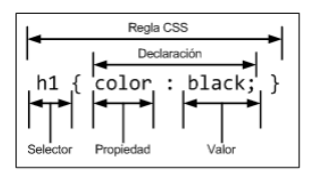
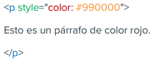
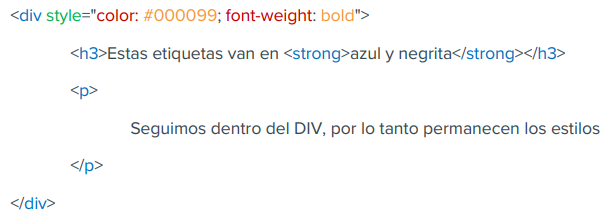
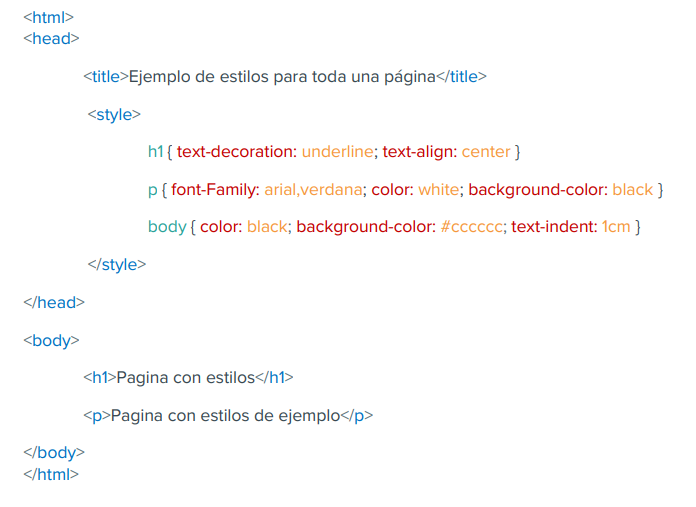
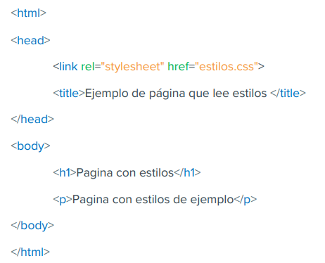
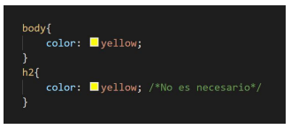
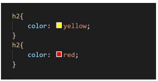
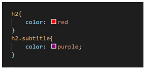
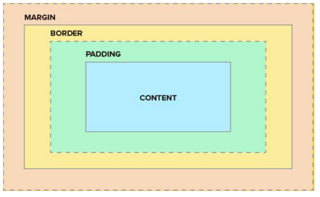
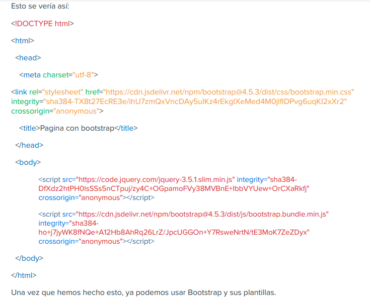

"< caption>: es una frase que va a estar afuera de la tabla"
"< thead>: es el encabezado de la tabla"
"< tbody>: es el cuerpo de nuesta tabla"
Dentro de la tabla se permiten atributos
"< table border="1" algin="left" bgcolor="black" style="width:100%">"
| Titulo Celda1 | Titulo Celda2 |
|---|---|
| Celda1, linea1 | Celda2, linea1 |
| Celda1, linea2 | Celda2, linea2 |
| NOMBRE | APELLIDO | EDAD |
|---|---|---|
| David | Benitez | 33 |
| Mario | Gonzalez | 36 |
| Esteban | Varela | 23 |
| NOMBRE | Juan | Pablo | Pedro |
|---|---|---|---|
| APELLIDO | Perez | Lopez | Vera |
| EDAD | 23 | 43 | 32 |
Formularios en HTML
¿CÓMO HACER UN FORMULARIO EN HTML?
"Los formularios son definidos por medio de las etiquetas form> y su cierre. Entre estas dos etiquetas colocaremos todos los campos y botones que componen el formulario. Dentro de esta etiqueta form> debemos especificar algunos atributos:"
action: define el tipo de acción a llevar a cabo con el formulario. Como ya hemos dicho, existen dos posibilidades:
- El formulario es enviado a una dirección de correo electrónico. Para esto hay que poner el mail en el action.
- El formulario es enviado a un programa o script que procesa su contenido. Esta es la posibilidad que más nos interesa y abordaremos en otro módulo.
Ejemplo:
" form action="ruta del método que va a manejar la información"> /form>"
method: Este atributo se encarga de especificar la forma en la que el formulario es enviado. Los dos valores posibles que puede tomar este atributo son POST y GET. A efectos prácticos y, salvo que se diga lo contrario, daremos siempre el valor POST.
enctype: Se utiliza para indicar la forma en la que viajará la información que se mande por el formulario. En el caso más corriente, enviar el formulario por correo electrónico, el valor de este atributo debe de ser "text/plain". Así conseguimos que se envíe el contenido del formulario como texto plano dentro del email. Si fuéramos a enviar una imagen dentro del formulario, este atributo debería ser “multipart/form-data”. También todos estos conceptos vamos a detallarlos más adelante.
Ejemplo:
" form action="ruta del método que va a manejar la información" method="POST" enctype="multipart/form-data" > "
CAMPOS DE TEXTO
ETIQUETA INPUT: Las cajas de texto son colocadas por medio de la etiqueta < input>. Dentro de esta etiqueta hemos de especificar el valor de dos atributos: type y name.
"< input type="text" name="nombre"> "
ATRIBUTO TYPE: Como hemos visto el atributo type nos sirve para especificar el tipo de dato que se va a ingresar en nuestro input
NUMBER Ejemplo: < input type="number">
DATE Ejemplo: < input type="date">
EMAIL Ejemplo: < input type="email">
CONTRASEÑA Ejemplo: < input type="password">
ATRIBUTOS PRESCINDIBLES
size: define el tamaño de la caja de texto
maxlength: indica el tamaño máximo del texto
value: en algunos casos puede resultarnos interesante asignar un valor predefinido al campo
ETIQUETA LABEL
El elemento
"< input type="text" name="nombre">"
Atributo for
La etiqueta label solo consta del atributo for. Mediante la utilización del atributo for podemos asociar el label con el input. Para lograr esto vamos a tener que utilizar también el atributo id, este atributo lo explicamos previamente y lo vamos a ver más en detalle en la parte de CSS.
Listas de Opciones
Las listas de opciones son ese tipo de menús desplegables que nos permiten elegir una (o varias) de las múltiples opciones que nos proponen. Para construirlas emplearemos una etiqueta SELECT, con su respectivo cierre.
Como para los casos ya vistos, dentro de esta etiqueta definiremos su nombre por medio del atributo name. Cada opción será incluida en una línea precedida de la etiqueta OPTION.
Atributos de la Etiqueta Select
size: indica el número de valores mostrados a la vez en la lista.
multiple: permite la selección de más elementos de la lista
"< select name="estacion" size="3" multiple> < /select>"
Atributo para la etiqueta option
La etiqueta < option> puede asimismo ser modificada por medio de otro atributo. selected: del mismo modo que multiple, este atributo no toma ningún valor, sino que simplemente indica que la opción que lo presenta esta elegida por defecto.
"< option selected>Otoño< /option>"
BOTONES DE RADIO
Existe otra alternativa para plantear una elección, en este caso, obligamos al usuario a elegir únicamente una de las opciones que se le proponen. La etiqueta empleada en este caso es < input> en la cual usaremos el atributo type con el valor radio. Este atributo colocara una casilla pinchable al lado del valor del input.
Ejemplos:
"< input type="radio" name="estacion" value="1">Primavera "
"< input type="radio" name="estacion" value="2">Verano "
CAJAS DE VALIDACIÓN
Este tipo de elementos pueden ser activados o desactivados por el visitante por un simple click sobre la caja en cuestión. Para esto vamos a usar la etiqueta INPUT con el valor checkbox en el atributo type.
"< input type="checkbox" name="estacion" value="1">Primavera "
BOTÓN DE ENVÍO DE FORMULARIO (BOTÓN SUBMIT)
Para dar por finalizado el proceso de relleno del formulario y hacerlo llegar a su gestor, el usuario ha de enviarlo por medio de un botón previsto a tal efecto. Para esto vamos a utilizar la etiqueta < button> y su respectivo cierre. Dentro el elemento button se puede poner texto (y etiquetas como < i>, < b>, < strong>, < br>, < img>, etc.). Se vería así:
"< button type="submit">Enviar< /button> "
Como puede verse, tan solo hemos de especificar que se trata de un botón de envío (type="submit") y hemos de definir el mensaje que queremos que aparezca escrito en el botón
BOTÓN DE BORRADO (BOTÓN DE RESET)
Este botón nos permitirá borrar el formulario por completo, en el caso de que el usuario desee rehacerlo desde el principio. Su estructura sintáctica es parecida a la anterior:
"< button type="reset">Borrar< /button>"
BOTONES NORMALES
Dentro de los formularios también podemos colocar botones normales, pulsables como cualquier otro botón. Estos botones por si solos no tienen mucha utilidad, pero podremos necesitarlos para realizar acciones en el futuro. Su sintaxis es la siguiente:
"< button type="button">Aceptar< /button>"
DATOS OCULTOS (CAMPOS HIDDEN)
En algunos casos, aparte de los propios datos rellenados por el usuario, puede resultar práctico enviar datos definidos por nosotros mismos que ayuden al programa en su procesamiento del formulario. Este tipo de datos, que no se muestran en la página, pero si pueden ser detectados solicitando el código fuente, no son frecuentemente utilizados por páginas construidas en HTML, son más bien usados por páginas que emplean tecnologías de servidor. No se asusten, veremos más adelante qué quiere decir esto. Tan solo queremos dar constancia de su existencia y de su modo creación.
"< input type="hidden" name="instituto" value="Egg Educación">"
ETIQUETA TEXTAREA PARA TEXTO LARGO
Si deseamos poner a disposición del usuario un campo de texto donde pueda escribir cómodamente sobre un espacio compuesto de varias líneas, hemos de invocar una nueva etiqueta: < textarea> y su cierre correspondiente.
Dentro de la etiqueta textarea deberemos indicar, como para el caso visto anteriormente, el atributo name para asociar el contenido a un nombre que será asemejado a una variable en un lenguaje de programación. Además, podemos definir las dimensiones del campo a partir de los atributos siguientes:
- rows: define el número de líneas del campo de texto.
- cols:define el número de columnas del campo de texto.
La etiqueta queda por tanto de esta forma:
"< textarea name="comentario" rows="10" cols="40"> < /textarea> "
Asimismo, es posible predefinir el contenido del campo. Para ello, no usaremos el atributo value, sino que escribiremos dentro de la etiqueta el contenido que deseamos atribuirle.
"< textarea name="comentario" rows="10" cols="40">Escribe tu comentario…< /textarea>"
SECCIONES EN HTML

header: encabezado: representa un grupo de artículos introductorios o de navegación. Está destinado a contener por lo general la cabecera de la sección (un elemento h1-h6 o un elemento hgroup).
nav: navegacion: se utiliza para representar una sección "general" dentro de un documento o aplicación, como un capítulo de un libro. Puede contener subsecciones y si lo acompañamos de h1-h6 podemos estructurar mejor toda la página creando jerarquías del contenido, algo muy favorable para el buen posicionamiento web.
article: articulo: representa un componente de una página que consiste en una composición autónoma en un documento, página, aplicación, o sitio web con la intención de que pueda ser reutilizado y repetido.
section: seccion: se utiliza para representar una sección "general" dentro de un documento o aplicación, como un capítulo de un libro. Puede contener subsecciones y si lo acompañamos de h1-h6 podemos estructurar mejor toda la página creando jerarquías del contenido, algo muy favorable para el buen posicionamiento web.
aside: aparte: representa una sección de la página que abarca un contenido relacionado con el contenido que lo rodea, por lo que se le puede considerar un contenido independiente. Este elemento puede utilizarse para efectos tipográficos, barras laterales, elementos publicitarios u otro contenido que se considere separado del contenido principal de la página.
footer: pie de pagina: representa el pie de una sección, con información acerca de la página/sección que poco tiene que ver con el contenido de la página, como el autor, el copyright o el año.
hgroup: representa el encabezado de una sección. El elemento se utiliza para agrupar un conjunto de elementos h1-h6 cuando el título tiene varios niveles, tales como subtítulos o títulos alternativos.
ETIQUETA DIV
La etiqueta div se conoce como etiqueta de división. Esta etiqueta se usa en HTML para hacer divisiones de contenido en la página web como (texto, imágenes, encabezado, pie de página, barra de navegación, etc.). La etiqueta div tiene etiquetas de apertura (< div>) y de cierre (< /div>) y es obligatorio cerrar la etiqueta. Div es la etiqueta más útil en el desarrollo web porque nos ayuda a separar datos en la página web y podemos crear una sección particular para datos o funciones particulares en las páginas web. Cabe aclarar que la etiqueta div genera un salto de línea.
- La etiqueta Div es una etiqueta de nivel de bloque
- Es una etiqueta de contenedor genérica
- Se utiliza para agrupar varias etiquetas de HTML para que se puedan crear secciones y aplicarles estilo en conjunto.
Como hemos visto, la etiqueta DIV marca divisiones en las que definimos un bloque de contenido, y a los que podríamos aplicar estilo de manera global, aunque lo correcto sería aplicar ese estilo del lado del CSS.
ETIQUETA SPAN
El elemento span HTML es un contenedor en línea genérico para elementos y contenido en línea. Se usa para agrupar elementos con fines de compartir un determinado estilo (mediante el uso de los atributos de clase o id). La mejor manera de usarlo es cuando no hay ningún otro elemento semántico disponible. Esta etiqueta es muy similar a la etiqueta div, pero se diferencian en que div es una etiqueta a nivel de bloque y span es una etiqueta en línea. La etiqueta span es una etiqueta emparejada, lo que significa que tiene una etiqueta de apertura (<) y de cierre (>), y es obligatorio cerrar la etiqueta. La etiqueta span se utiliza para agrupar elementos en línea y no realiza ningún cambio visual por sí misma.
Ejemplo:
"< p>Yo estudio en < span style="color: yellow">Egg< /span> Programación FullStack < /p>"
Yo estudio en Egg Programación FullStack
CSS
CSS es el acrónimo de Cascading Style SheetsCascading Style Sheets, o lo que sería en español Hojas de Estilo en Cascada. Es un lenguaje que sirve para especificar el estilo o aspecto de las páginas web. CSS se define en base a un estándar publicado por una organización llamada W3C, que también se encarga de estandarizar el propio lenguaje HTML.
VENTAJAS Y CARACTERISTICAS DE CSS
Podemos aplicar CSS a muchos niveles, desde un sitio web entero hasta una pequeña etiqueta. Estos son los principales bloques de acción.
- Una web entera: de modo que se puede definir en un único lugar el estilo de toda una web, de una sola vez.
- Un documento HTML o página en particular: se puede definir la forma de cada uno de los bloques de contenido de una página, en una declaración que afectará a un solo documento de un sitio web.
- Una porción del documento: aplicando estilos visibles en un trozo de la página, como podría ser la cabecera.
- Una etiqueta en concreto: llegando incluso a poder definir varios estilos diferentes para una sola etiqueta. Esto es muy importante ya que ofrece potencia en nuestra programación.
- Podemos definir la distancia entre líneas del documento.
- Se puede aplicar identado (sangrado) a las primeras líneas del párrafo.
- Podemos colocar elementos en la página con mayor precisión, y sin lugar a errores.
- Y mucho más, como definir la visibilidad de los elementos, márgenes, subrayados, tachados, etc.
UNIDADES DE MEDIDA EN CSS
- Pixeles (px) y porcentaje (%), como antes.
- Pulgadas (in).
- Puntos (pt).
- Centímetros (cm).
SINTAXIS EN CSS
La meta básica del lenguaje Cascading Stylesheet (CSS) es permitir al motor del navegador pintar elementos de la página con características específicas, como colores, posición o decoración. La sintaxis CSS refleja estas metas y estos son los bloques básicos de construcción.
- La propiedad que es un identificador, un nombre leíble por humanos, que define qué característica es considerada.
- El valor que describe como las características deben ser manejadas por el motor. Cada propiedad tiene un conjunto de valores válidos, definido por una gramática formal, así como un significado semántico, implementados por el motor del navegador.
DECLARACIONES DE CSS
La función principal de CSS es configurar determinadas propiedades con valores específicos. Este par (propiedad y valor) es llamado una declaración.
Ambos propiedades y valores son sensibles a mayúsculas y minúsculas en CSS. El par se separa por dos puntos, “ : ”, y espacios en blanco antes, entre ellos y después.

Hay más de 100 propiedades diferentes en CSS y cerca de un número infinito de diferentes valores. No todos los pares de propiedades y valores son permitidos, cada propiedad define qué valores son válidos. Cuando un valor no es válido para una propiedad específica, la declaración es considerada inválida y es completamente ignorada por el motor del CSS.
BLOQUES DE DECLARACIONES EN CSS
Las declaraciones son agrupadas en bloques, que es una estructura delimitada por una llave de apertura, ‘{‘, y una de cierre, ‘}’. Los bloques en ocasiones pueden anidarse, por lo que las llaves de apertura y cierre deben de coincidir.

Esos bloques son naturalmente llamados bloques de declaraciones y las declaraciones dentro de ellos están separadas por un punto y coma, “ ; ”. Un bloque de declaración puede estar vacío, que es contener una declaración nula. Los espacios en blanco alrededor de las declaraciones son ignorados. En cuanto a la última declaración de un bloque, esta no necesita terminar en un punto y coma, aunque es usualmente considerado una buena práctica porque previene el olvidar agregarlo cuando se extienda el bloque con otra declaración.
¿QUÉ PARTES CONFORMAN A UNA DECLARACIÓN CSS?
CSS define una serie de términos que permiten describir cada una de las partes que componen los estilos CSS. El siguiente esquema muestra las partes que forman un estilo CSS muy básico:
Los diferentes términos se definen a continuación:
Regla: cada uno de los estilos que componen una hoja de estilos CSS.
Selector: indica el elemento o elementos HTML a los que se aplica la regla CSS.
Declaración: especifica los estilos que se aplican a los elementos. Está compuesta por una o más propiedades CSS.
Propiedad: permite modificar el aspecto de una característica del elemento.
Valor: indica el nuevo valor de la característica modificada en el elemento.
PINCLUIR CSS A NUESTRO HTML
CSS sirve para definir el aspecto de las páginas web, eso ya debe haber quedado claro. No obstante, hay diferentes niveles a los que podemos aplicar los estilos. Vamos a ir por orden, describiendo los puntos desde el más específico al más general, de manera que también iremos aumentando la dificultad e importancia de los distintos usos.
PEQUEÑAS PARTES DE LA PÁGINA
Para definir estilos en secciones reducidas de una página se puede utilizar el atributo style en la etiqueta sobre la que queremos aplicar estilos. Como valor de ese atributo indicamos en sintaxis CSS las características de estilos. Lo vemos con un ejemplo, pondremos un párrafo en el que determinadas palabras las vamos a visualizar en color verde
" < p> Yo estudié en < span style="color: yellow"> Egg Education < /span> programación < /p> "
ESTILO DEFINIDO PARA UNA ETIQUETA
De este modo podemos hacer que toda una etiqueta muestre un estilo determinado. Por ejemplo, podemos definir un párrafo entero en color rojo y otro en color azul. Para ello utilizamos el atributo style, que es admitido por todas las etiquetas del HTML.
ESTILO DEFINIDO EN UNA PARTE DE LA PÁGINA
Con la etiqueta < div> podemos definir secciones de una página y aplicarle estilos con el atributo style, es decir, podemos definir estilos de una vez a todo un bloque de la página.
ESTILO DEFINIDO PARA TODA UNA PÁGINA
Podemos definir, en la cabecera del documento, estilos para que sean aplicados a toda la página. Es una manera muy cómoda de darle forma al documento y muy potente, ya que estos estilos serán seguidos en toda la página y nos ahorraremos así "ensuciar" las etiquetas HTML colocando el atributo style.
Además, es común que los estilos declarados se quieran aplicar a distintas etiquetas dentro del mismo documento. Gracias a la aplicación de estilos para toda la página, podemos escribir los estilos una vez y usarlos para un número indefinido de etiquetas. Por ejemplo, podremos definir el estilo a todos los párrafos una vez y que se aplique igualmente, sea cual sea el número de párrafos del documento. Por último, también tendremos la ventaja que, si más adelante deseamos cambiar los estilos de todas las etiquetas, lo haremos de una sola vez, ya que el estilo fue definido una única vez de manera global.
A grandes rasgos, entre "<" style>" y "< /style >", se coloca el nombre de la etiqueta (o selector) para la que queremos definir los estilos y entre llaves "-{ }-" colocamos en sintaxis CSS las características de estilos. El concepto de selectores lo veremos más adelante.
Como se puede apreciar en el código, hemos definido que la etiqueta < h1> se presentará subrayado y centrado
También, por ejemplo, hemos definido que el cuerpo entero de la página (etiqueta
) se le apliquen los estilos siguientes: Color del texto negro, Color del fondo grisáceo, Margen lateral de 1 centímetroESTILO DEFINIDO PARA TODO UN SITIO WEB
Una de las características más potentes del desarrollo con hojas de estilos es la posibilidad de definir los estilos de todo un sitio web en una única declaración.
Esto se consigue creando un archivo de extensión .css donde tan sólo colocamos las declaraciones de estilos de la página y enlazando todas las páginas del sitio con ese archivo. De este modo, todas las páginas comparten una misma declaración de estilos, reutilizando el código CSS de una manera mucho más potente
¿CÓMO INCORPORAR ESTILOS DESDE UN ARCHIVO EXTERNO?
Veamos ahora cómo el proceso para incluir estilos con un fichero externo.
1- CREAMOS EL FICHERO CON LA DECLARACIÓN DE ESTILOS
Es un fichero de texto normal con la extensión .css para aclararnos qué tipo de archivo es. El texto que debemos incluir debe ser escrito exclusivamente en sintaxis CSS, es decir, sería erróneo incluir código HTML en él: etiquetas y demás. Podemos ver un ejemplo a continuación.
El nombre de este archivo va a ser estilos.css
{
font-size: 12cm; - tamaño de fuente
font-family: arial, helvetica; - tipo de letra
font-weight: normal; - ancho de letra
}
h1 {
font-size: 36cm; - tamaño de fuente
font-family: verdana, arial; - tipo de letra
text-decoration: underline; - decoracion de texto: subrayado
text-align: center; - alineacion de texto
background-color: Teal; - color de fondo
}
body { - cuerpo
background-color: #006600; - color de fondo
font-family: arial; - tipo de letra
color: White; - color
}
2- ENLAZAMOS LA PÁGINA WEB CON LA HOJA DE ESTILOS
Para ello, vamos a colocar la etiqueta dentro de la etiqueta
con los atributos siguientes:- rel: indica el tipo de relación que tiene el recurso enlazado y la página HTML. Para los archivos CSS, siempre se utiliza el valor stylesheet.
- href: indica la URL del archivo CSS que contiene los estilos. La URL indicada puede ser relativa o absoluta y puede apuntar a un recurso interno o externo al sitio web.
Veamos una página web entera que enlaza con la declaración de estilos anterior:
SELECTORES CCS
Teniendo en cuenta que ya podemos asignarle estilos a todo un sitio web, mediante un archivo css que usa selectores para elegir las etiquetas a las que asignarles los estilos, también tenemos que entender que existen varios tipos de selectores
SELECTOR UNIVERSAL
Se utiliza para seleccionar todos los elementos de la página. El siguiente ejemplo elimina el margen y el relleno de todos los elementos HTML (por ahora no es importante fijarse en la parte de la declaración de la regla CSS):
* {
margin: 0; - margen
padding: 0; - relleno
}
SELECTOR DE ETIQUETA
Selecciona todos los elementos de la página cuya etiqueta HTML coincide con el valor del selector. El siguiente ejemplo selecciona todos los párrafos de la página:
* {
text-align: justify; - alineacion de texto: justificar
font-family: verdana; - tipo de letra
}
El siguiente ejemplo seleciona todas las tablas div de la pagina
table, div {
border: 1px solid red;
}
SELECTOR DESCENDENTE
Selecciona los elementos que se encuentran dentro de otros elementos. Un elemento es descendiente de otro cuando se encuentra entre las etiquetas de apertura y de cierre del otro elemento. El selector del siguiente ejemplo selecciona todos los elementos < span> de la página que se encuentren dentro de un elemento < p>.
p span {color, red;}
SELECTOR DE CLASE
¿Como hago para aplicarle estilos solo al primer párrafo?
Una de las soluciones más sencillas para aplicar estilos a un solo elemento de la página consiste en utilizar el atributo class de HTML sobre ese elemento para indicar directamente la regla CSS que se le debe aplicar. Ejemplo:
HTML
< body>
< p class="destacado"> Párrafo 1< /p>
< p class="error"> Párrafo 2< /p>
< p> Párrafo 3< /p>
< /body>
CSS
.destacado {
font-size: 15px;
}
.error {
color: red;
}
En nuestro archivo CSS para especificar una clase, vamos a poner punto (‘.’) y el nombre de la clase que queremos que coincida que con valor que pongamos en nuestro atributo class en el html.
Entonces, en el ejemplo podemos ver como el primer párrafo tiene el valor destacado y el segundo párrafo el valor error para el atributo class y en nuestro archivo CSS, hemos definido un estilo para esas clases.
El beneficio del atributo class, además de dejarnos asignar estilos a un solo elemento, es que después podemos reutilizar esa class para asignarle ese estilo a otros párrafos concretos o a otras etiquetas, solo deberemos ponerle el valor de un estilo que ya existe en el atributo class.
SELECTOR DE ID
En un documento HTML, los selectores de ID de CSS buscan un elemento basado en el contenido del atributo id. El atributo ID del elemento seleccionado debe coincidir exactamente con el valor dado en el selector. Este tipo de selectores sólo seleccionan un elemento de la página porque el valor del atributo id no se puede repetir en dos elementos diferentes de una misma página.
HTML
< div id="identificador"> ¡Este div tiene un ID especial! < /div>
< div> Este solo es un div regular. < /div>
CSS
#identificador{
background-color: blue;
}
En nuestro archivo CSS para especificar un ID, vamos a poner el numeral (‘#’) y el nombre del ID que queremos que coincida que con valor que pongamos en nuestro atributo ID en el html.
Como podemos ver el ID, es muy parecido al atributo class, pero la diferencia es que el ID se puede usar para identificar un solo elemento, mientras que una clase se puede usar para agrupar más de uno.
Manos a la obra
Actividad: Presentación Personal – Estilos CSS
PRIORIDAD EN APLICACIÓN DE ESTILOP
Ahora que entendemos los selectores en CSS, tenemos que entender como priorizar los estilos en CSS, para saber qué estilo hace efecto y cuál no sobre determinado elemento.
HERENCIA
Los hijos heredan los estilos de sus elementos padres, no es necesario declarar sus estilos si estos se mantienen igual.
CASCADA
Todo estilo sobrescribe a uno anterior.
ESPECIFICIDAD
Cuando hay conflictos de estilos el navegador aplica sólo el de mayor especificidad.
¿QUÉ ES EL MODELO DE CAJA?
El modelo de cajas o "box model" es seguramente la característica más importante del lenguaje de hojas de estilos CSS, ya que condiciona el diseño de todas las páginas web. El modelo de cajas es el comportamiento de CSS que hace que todos los elementos de las páginas se representen mediante cajas rectangulares.
Las cajas de una página se crean automáticamente. Cada vez que se inserta una etiqueta HTML, se crea una nueva caja rectangular que encierra los contenidos de ese elemento. La siguiente imagen muestra las tres cajas rectangulares que crean las tres etiquetas HTML que incluye la página:

Las cajas de las páginas no son visibles a simple vista porque inicialmente no muestran ningún color de fondo ni ningún borde.
Los navegadores crean y colocan las cajas de forma automática, pero CSS permite modificar todas sus características. Cada una de las cajas está formada por cuatro partes, tal y como muestra la siguiente imagen:
- Contenido (content): se trata del contenido HTML del elemento (las palabras de un párrafo, una imagen, el texto de una lista de elementos, etc.)
- Relleno (padding): espacio libre opcional existente entre el contenido y el borde.
- Borde (border): línea que encierra completamente el contenido y su relleno.
- Margen (margin): separación opcional existente entre la caja y el resto de las cajas adyacentes.
- Imagen de fondo (background image): imagen que se muestra por detrás del contenido y el espacio de relleno.
- Color de fondo (background color): color que se muestra por detrás del contenido y el espacio de relleno.
Existen otras dos partes de una caja que son:
El relleno y el margen son transparentes, por lo que en el espacio ocupado por el relleno se muestra el color o imagen de fondo (si están definidos) y en el espacio ocupado por el margen se muestra el color o imagen de fondo de su elemento padre (si están definidos). Si ningún elemento padre tiene definido un color o imagen de fondo, se muestra el color o imagen de fondo de la propia página (si están definidos).
Si una caja define tanto un color como una imagen de fondo, la imagen tiene más prioridad y es la que se visualiza. No obstante, si la imagen de fondo no cubre totalmente la caja del elemento o si la imagen tiene zonas transparentes, también se visualiza el color de fondo. Combinando imágenes transparentes y colores de fondo se pueden lograr efectos gráficos muy interesantes.
PSEUDO-CLASES
CSS también permite aplicar diferentes estilos a un mismo enlace en función de su estado. De esta forma, es posible cambiar el aspecto de un enlace cuando por ejemplo el usuario pasa el ratón por encima o cuando el usuario pincha sobre ese enlace.
Como con los atributos id o class no es posible aplicar diferentes estilos a un mismo elemento en función de su estado, CSS introduce un nuevo concepto llamado pseudo-clases. En concreto, CSS define las siguientes cuatro pseudo-clases:
- :link, aplica estilos a los enlaces que apuntan a páginas o recursos que aún no han sido visitados por el usuario.
- :visited, aplica estilos a los enlaces que apuntan a recursos que han sido visitados anteriormente por el usuario. El historial de enlaces visitados se borra automáticamente cada cierto tiempo y el usuario también puede borrarlo manualmente.
- :hover, aplica estilos al enlace sobre el que el usuario ha posicionado el puntero del ratón.
- :active, aplica estilos al enlace que está clickeado el usuario.
BOOTSTRAP
Es un framework de interfaz de usuario, de código abierto, creado para un desarrollo web más rápido y sencillo. Mark Otto y Jacob Thornton fueron los creadores iniciales. El framework combina CSS y JavaScript para estilizar los elementos de una página HTML.
Contiene todo tipo de plantillas de diseño basadas en HTML y CSS para diversas funciones y componentes, como navegación, sistema de cuadrícula, carruseles de imágenes y botones.
Si bien Bootstrap ahorra tiempo al desarrollador de tener que administrar las plantillas repetidamente, su objetivo principal es crear sitios responsive. Permite que la interfaz de usuario de un sitio web funcione de manera óptima en todos los tamaños de pantalla, ya sea en teléfonos de pantalla pequeña o en dispositivos de escritorio de pantalla grande.
Por lo tanto, los desarrolladores no necesitan crear sitios específicos para dispositivos y limitar su rango de audiencia.
ARCHIVOS PRIMARIOS DE BOOTSRAP
Ya sabemos qué es Bootstrap; consiste en una colección de sintaxis que realizan funciones específicas. Debido a esto, tiene sentido que el marco tenga solo tres diferentes tipos de archivos. A continuación, detallamos los tres archivos principales que administran esta interfaz de usuario y la funcionalidad de un sitio web.
BOOTSTRAP.CSS
Esta es la hoja de estilos de bootstrap, gracias a esta podremos implementar estilos ya definidos y así estilizar nuestra página de una manera sencilla. Además, las plantillas que contiene bootstrap, usan esta hoja de estilos
BOOTSTRAP.JS
Este archivo es la parte principal de Bootstrap. Consiste en archivos JavaScript que son responsables de la interactividad del sitio web.
CÓMO USAR BOOTSTRAP
Para utilizar bootstrap lo único que vamos a tener que hacer es ir a estas dos páginas:
https://getbootstrap.com/docs/4.5/getting-started/introduction/#css
https://getbootstrap.com/docs/4.5/getting-started/introduction/#js
Dentro de estas dos páginas vamos a encontrar una etiqueta link para el CSS de Bootstrap y unas etiquetas script para el JavaScript de Bootstrap.
Para poder usar Bootstrap lo que haremos es pegar el link con la hoja de estilos de Bootstrap en la etiqueta < head> de nuestro html y las etiquetas script antes de la etiqueta de cierre < /body>.
PLANTILLAS
Dado que es uno de los framework más utilizados, podemos encontrar un amplio abanico de marcos de trabajo pensados y diseñados a partir de los componentes y estilos que presenta Bootstrap, de modo que existen variables y ejemplos listos para utilizar en proyectos específicos.
https://themes.getbootstrap.com/official-themes/